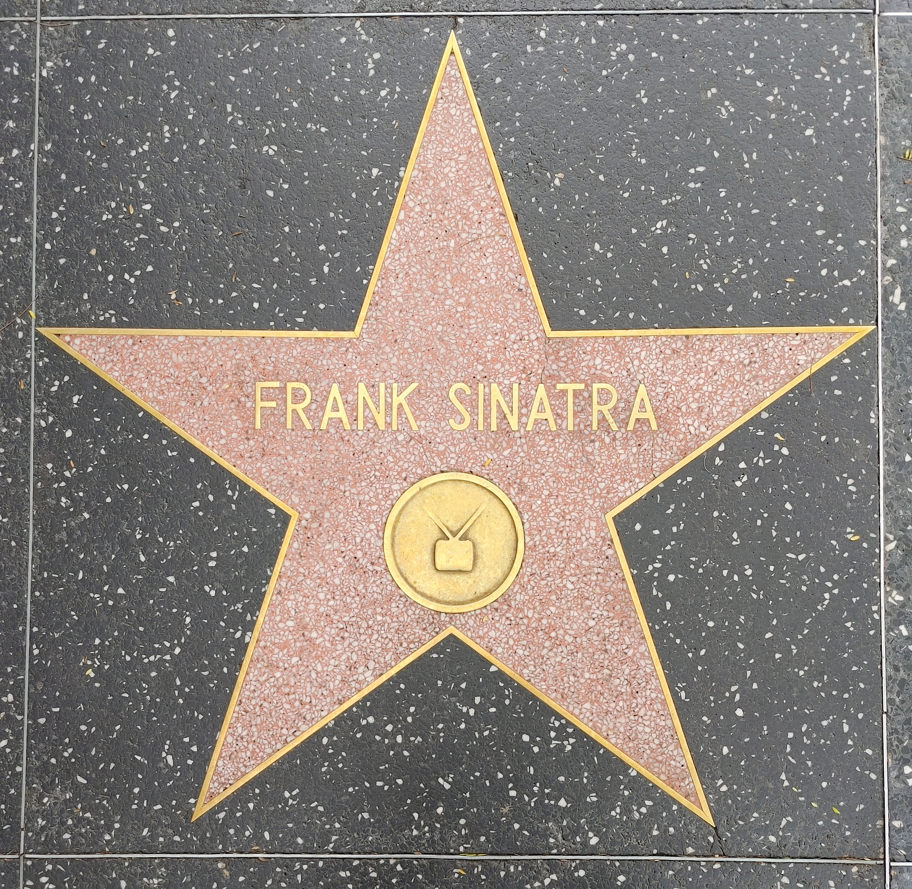
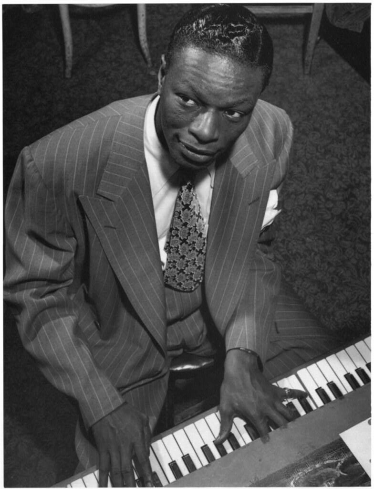
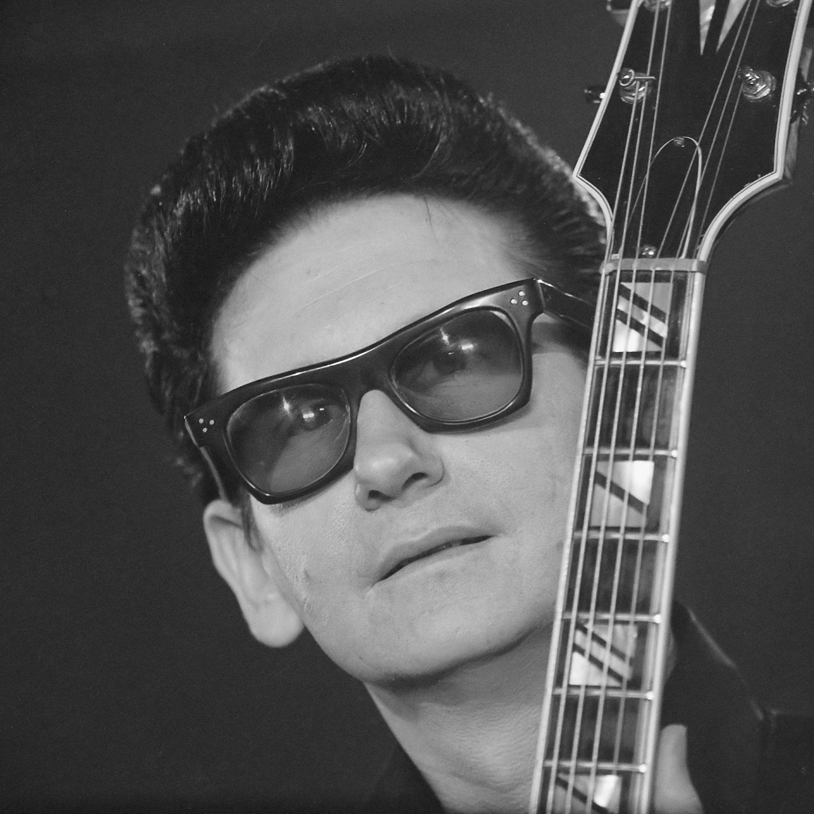

Parliamo di uno dei più famosi cantanti e trombettisti che ha rivoluzionato la storia della musica per un lunghissimo periodo.
Se dico What a Wonderful World? Ebbene sì, questa canzone uscita nel 1967 è la perfetta colonna sonora per iniziare di buon umore qualsiasi giornata.
Foto licenza CC0
1966. Immaginate di camminare nella notte per le strate di New York e improvvisamente in sottofondo parte Strangers in the night. Chiaramente sto parlando di Frank Sinatra.
Canzone che fa sognare chi l'ha sentita uscire per la prima volta. Ma a distanza di quasi sessant'anni, io sono qui che la ascolto a ripetizione sognando ad occhi aperti.

Foto licenza CC0
Sorridi. Siamo nel 1936 e Chaplin scrive un motivetto per il film Tempi Moderni. Circa vent'anni dopo, il motivetto diventa una canzone e a cantarla è Nat King Cole.
Smile. Ascoltiamola.

Foto licenza CC0
Pa ra pa ra para papap... E insomma, se non si fosse capito ... i love you baby. Siamo nel 1967 e Frankie Valli canta Cant Take My Eyes off You. Una canzone che ti trascina nel ritmo pur mantenendo una apparente compostezza. Balliamo?

Vinile. 1963. Il trio The Ronettes ci trasporta nei sogni con Be My Baby. La canzone ha visto negli anni una numerosa produzione di cover da parte di molti artisti famosi, tra cui anche i Maroon 5.
Canzone del 1964. Roy Orbison. Oh! Pretty Woman è probabilmente ricordata soprattutto per il film degli anni Novanta interpretato da Julia Robert e Richard Gere. Chi non vorrebbe vivere in quel film!
